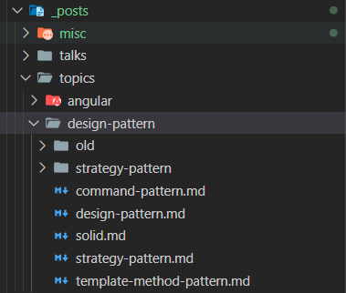

在不改變連結的情況下搬移 Hexo 文章
Hexo 預設的文章連結設計我覺得不太好對文章做管理
造成我必須在文章的檔案名稱加上一些前綴以方便區分檔案
為了以後方便管理文章，所以我就做了文章的遷移
想說是時候該寫文章了，就拿這次遷移水一篇 XD
老實說早期剛開始寫 blog 的時候還沒想到這個問題
但在我重寫一次 DesignPattern (然後又放著長草) 之後，才發現 Hexo 預設的文章連結設計讓我沒辦法很好的去分類檔案
permalink
Hexo 預設的永久路徑長這樣
# ... |
這其實有點誤導，根據官方文件的寫法， :title 指的是相對 source/_posts/ 的檔案路徑，只要我搬移檔案，路徑就會變動
因為這個原因，所以我之前的文章都會加一些前綴來跟以前的文章錯開
現在我使用的配置是
# ... |
這個才是以文章的標題去決定 url
由於路徑上會包含年月日，因此完全不用擔心連結衝突的問題
有關 permalink 的敘述可參考官方文件：Permalinks | Hexo
調整完新文章的連結配置之後，再來就是要處理舊檔案
舊檔案處理
其實官方的第一段就有講到 permalink 這個配置可以 by 文章設定，但我實際上是看留言才知道的🙃
You can specify the permalinks for your site in
_config.ymlor in the front-matter for each post.
於是我只要對每個文章當用這樣的形式輸入，就可以讓舊文章在不受影響的情況下進行文件搬移
--- |
後面一定要加上斜線，這樣 Hexo 產生文件時會將其放入獨立的資料夾內的 index.html 而非 <old-title> 檔案
設定好之後，就只剩文章連結要處理了
舊文章連結處理
由於我把我的文章整理之後塞到各自的資料夾內，因此使用 post_path 跟 post_link 兩個 tag 外掛的區段也要進行修改
一開始我的 DesignPattern 文章是使用 {% post_link note-design-pattern %} 來產生連接
但是當我將 md 檔分類到 topics/design-pattern/ 之後，必須要改成 {% post_link topics/design-pattern/note-design-pattern %}
實際上 post_link 跟 post_path 都是吃相對於 source/_posts/ 的檔案路徑 (不含副檔名)，因此這部份只要路徑有改動就必須做修正
結語
上面的幾項改完之後就是現在看到的 blog 的樣貌了，應該會發現沒什麼變化，我可是很仔細的看了 git 的 ChangeLog 來確定配置都沒有變動呢 :)
現在的文章分類大概就像下圖這樣：

除了位置的變動以外，也對檔案名稱做了修改，方便管理
因為之前的文章並不是很多，修改起來還算容易
改成用文章標題之後，以後就不需要再做這麼麻煩的設定了~